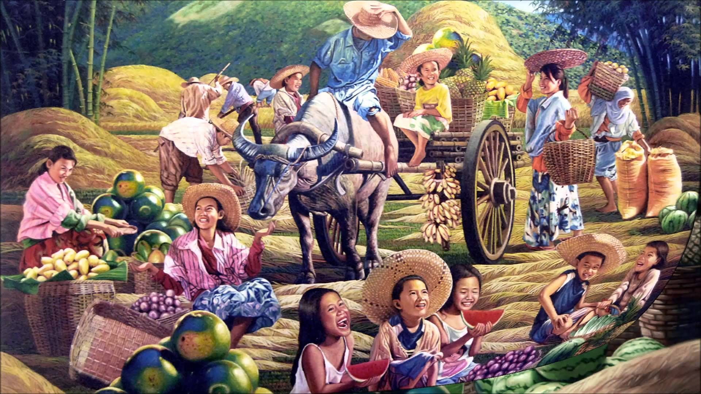

Philippines

Picture this: over 7,000 islands of pure magic nestled in Southeast Asia. Yep, that's the Philippines! It's not just a country; it’s a tropical wonderland bursting with stunning beaches, jaw-dropping mountains, and the clearest, bluest waters you’ll ever see. Think paradise on Earth, but with even better vibes. 🌴✨
Here’s the best part: the culture here is a vibrant fusion of Asian, Spanish, and American influences. From colorful festivals that light up the streets to food that’ll make your taste buds do a happy dance (hello, adobo and halo-halo!), there’s so much to love.
And let’s talk about the people—Filipinos are famous for their warm smiles and legendary hospitality. Whether you're soaking up the sun on Boracay’s powdery white sand, marveling at the surreal Chocolate Hills in Bohol, or diving into the history of Intramuros in Manila, you’ll feel like family.
Oh, and did we mention it’s not all beaches and beauty? The Philippines is also a buzzing hub for business, innovation, and unforgettable adventures. So, pack your bags, charge your camera, and get ready for moments that are totally Instagram-worthy. The Philippines is calling, and trust us—you’ll want to answer! 🌊🇵🇭💕